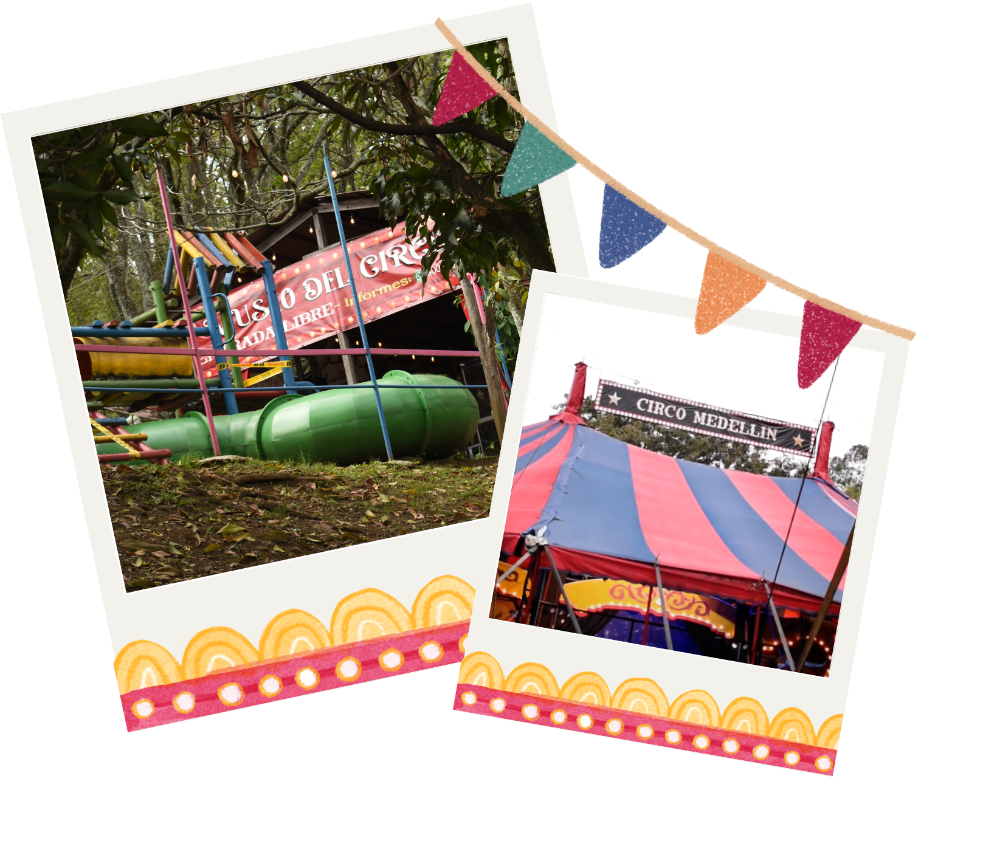

|  |
El consumo cultural sin duda es un |
Su fundador y director, Carlos Álvarez, un renombrado Mimo-Clown en Colombia, ha dedicado más de 30 años a las artes escénicas. El Circo Medellín no solo entretiene a su público, sino que también teje una red de afecto y compromiso con la comunidad. A través de sus actuaciones, talleres y programas sociales se convierte en un faro de esperanza y expresión artística.
Es importante destacar que el Circo de Medellín promueve el respeto hacia los animales sin recurrir al maltrato en busca de entretenimiento. Por ende, sus eventos se caracterizan por la ausencia de animales, y en su lugar, en el circo habitan varios perros que han sido rescatados. Carlos menciona “Los perritos que tenemos en el lugar son recogidos, habían sido abandonados”.
Según Álvarez, “Existe poco apoyo por parte de la administración local. Las autoridades administrativas locales… son muy cortas de vista; imagínate, el circo existe desde el 2010. El gobierno no sabe que cuenta con esta gran oportunidad, suele descuidarnos, incluso hubo momentos donde pensamos en tirar la toalla porque no nos ayudan con el reconocimiento y no recogemos dinero suficiente para los servicios públicos, para vigilancia…”
Durante las funciones, varios artistas circenses de la comunidad tienen la oportunidad de emprender vendiendo productos como juguetes y elementos para la diversión, esto con el propósito de recaudar fondos para la sostenibilidad económica y para alcanzar sus sueños colectivos artísticos.
Conoce aqu√≠ la tienda de accesorios del circo:üé≠Tienda del circo
Debido a que el Circo de Medellín se encuentra en un lugar estable (es decir, no es un circo viajero) cuenta con la ventaja de crear una escuela oficial no solo para ofrecer cursos y talleres, sino, para poder certificar profesionalmente a estudiantes en temas circenses con ayuda de convenios institucionales como los de la UdeA.
Además, la fundación ha realizado pequeños intercambios o apoyos mutuos entre entidades poco conocidas con el objetivo de incrementar tanto el reconocimiento propio como el local. Comenta el director del Circo “Quisiéramos crear convenios con universidades para contar con apoyos pedagógicos… Estas podrían brindarnos profesionales de las artes para ofrecer clases y aprender juntos; incluso podríamos certificar a los aprendices desde la misma universidad como un convenio”
Un ejemplo de esto es la escuela del Circo de Medellín en Brasil. Esta escuela presentó ciertos altercados para ser fundada debido a que no estaba permitido impartir clases sin profesionales con un título universitario, los únicos profesionales disponibles eran aquellos educados por la experiencia.
La fundación hace una intervención social a través del arte, la cual, está compuesta por múltiples aspectos: por ejemplo, este está constituido por personas vulnerables; de hecho, como dice Álvarez, el proyecto comenzó con chicos reclutados por un grupo armado en el barrio 13 de noviembre, quienes eran “carritos” o “mulas” (transportaban drogas, armas y dinero en el barrio) que eran dirigidos por los jefes de las bandas armadas. No obstante, el padre Rubén Sánchez, “adoptó” a estos jóvenes y los hizo parte de esta fundación llenando sus vidas de arte. Personas que recuperaron la alegría, la esperanza y la resistencia, dando paso al eslogan del Circo “El arte sana”.
Como nos cuenta Cristina López, quien lleva 6 años siendo bailarina del circo, sus hábitos cambiaron al iniciar este proceso, “Mi vida cambió completamente cuando ingresé al circo, era otro estilo de vida, ya no podía salir los fines de semana porque entonces, si salía a tomar, al otro día para presentarme en el aro me iba a sentir muy mal…”. Trabajar en el arte circense benefició a Cristina, redujo sus hábitos de consumo de licor y aumentó tanto su capacidad de compromiso como sus conocimientos en aros y danza aérea.
Conoce aqu√≠ m√°s sobre la danza a√©rea: üíÉüèª Danza a√©rea

Asimismo, el Payasito Javi lleva más de 35 años en este rubro de las artes escénicas y afirma que la importancia del circo radica en que a través de la risa se abstrae a las personas los hechos negativos que invaden su mundo, aunque en la actualidad hacer reír al público sea más complejo.
En un mundo donde las luces brillantes a menudo se apagan, la Fundación Circo Medellín sigue iluminando los corazones y las calles de esta ciudad. Su legado es un recordatorio de que el arte puede unir a las personas, trascender fronteras y crear un impacto duradero. Así que, la próxima vez que veas la carpa roja y blanca de la Fundación Circo Medellín, recuerda que detrás de cada actuación hay una historia de amor, dedicación y arte que sigue resonando en los corazones de todos los que han tenido el privilegio de presenciarla.